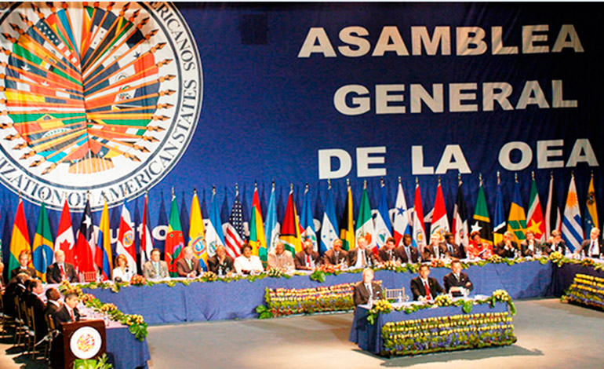

Derechos de Segunda Generación o Derechos Económicos, Sociales y Culturales
Los derechos de Segunda Generación o Derechos Económicos, Sociales y Culturales tienen como objetivo fundamental garantizar el bienestar económico, el acceso al trabajo, la educación y a la cultura, de tal forma que asegure el desarrollo de los seres humanos y de los pueblos.
Los derechos de Segunda Generación o Derechos Económicos, Sociales y Culturales tienen como objetivo fundamental garantizar el bienestar económico, el acceso al trabajo, la educación y a la cultura, de tal forma que asegure el desarrollo de los seres humanos y de los pueblos. Su reconocimiento en la historia de los Derechos Humanos fue posterior a la de los derechos civiles y políticos, de allí que también sean denominados derechos de la segunda generación.
La razón de ser de los Derechos Económicos, Sociales y Culturales se basa en el hecho de que el pleno respeto a la dignidad del ser humano, a su libertad y a la vigencia de la democracia, solo es posible si existen las condiciones económicas, sociales y culturales que garanticen el desarrollo de esos hombres y esos pueblos.
La vigencia de estos derechos se encuentra condicionada a las posibilidades reales de cada país, de allí que la capacidad para lograr la realización de los mismos varía de país a país.
Estos derechos económicos, sociales y culturales, pueden exigirse al Estado en la medida de los recursos que efectivamente él tenga, pero esto no significa que el Estado puede utilizar como excusa para el cumplimiento de sus obligaciones, el no poseer recursos cuando en realidad dispone de ellos.
En este aspecto, deben verificarse los indicadores de desarrollo integral en relación con la distribución que hace el Poder Público de sus ingresos en razón de la justicia social.
Derechos de Segunda generación o Derechos Económicos, Sociales y Culturales
Toda persona tiene derecho a la seguridad social y a obtener la satisfacción de los derechos económicos, sociales y culturales
Toda persona tiene derecho al trabajo en condiciones equitativas y satisfactorias
Toda persona tiene derecho a formar sindicatos para la defensa de sus intereses
Toda persona tiene derecho a un nivel de vida adecuado que le asegure a ella y a su familia la salud, alimentación, vestido, vivienda, asistencia médica y los servicios sociales necesarios
Toda persona tiene derecho a la salud física y mental
Durante la maternidad y la infancia toda persona tiene derecho a cuidados y asistencia especiales
Toda persona tiene derecho a la educación en sus diversas modalidades
La educación primaria y secundaria es obligatoria y gratuita
